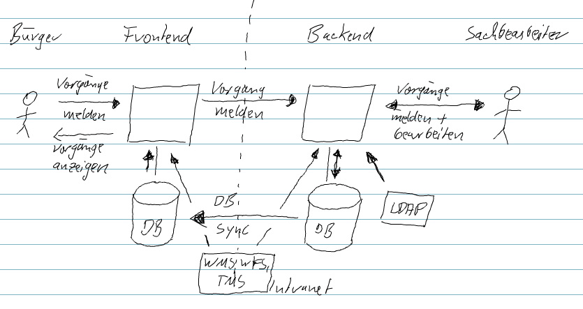

Entwicklerdokumentation
Klarschiff Backend
erstellt von
Änderungsübersicht
| Version | Datum | Bearbeiter | Beschreibung |
| 1.0 | 10.2011 | Stefan Audersch |
Inhaltsverzeichnis
Die Serviceplattform Klarschiff bietet dem Bürger eine einfache und transparente Möglichkeit, die Verwaltung auf Probleme der Stadtentwicklung und der öffentlichen Sicherheit und Ordnung hinzuweisen.
Meldungen sollen mittels Handy oder PC inklusive Foto und exakter geographischer Position erstellt und gemeldet werden können. Bei den Meldungen wird zwischen Problemen und Ideen unterschieden. Dieses sind beispielsweise Meldungen über illegale Müllablagerungen, über Verunreinigungen durch Graffiti, über defekte Straßenlaternen und Ampelanlagen, über demolierte Bänke, über umgestürzte Bäume, über Gefahrenstellen auf Gehwegen, über ungepflegte Grünanlagen usw. Die Meldung solcher Ideen oder Probleme erfolgt für den Bürger sehr einfach, indem er bei der Formulierung und Lokalisierung unterstützt wird.
Die Verwaltung erhält durch die Serviceplattform ein System, in dem Meldungen zentral registriert, verwaltet und bearbeitet werden können. Die Weiterleitung der Meldung an die richtigen Ansprechpartner in der Verwaltung zur weiteren Bearbeitung erfolgt dabei im System automatisch. Externe Dienstleister, zum Beispiel Entsorgungsdienstleister, sind mit dem System ebenfalls angebunden.
Gesamtziel des Projektes ist es, die Bürger aktiver in die Gestaltung des lokalen Lebensumfeldes einzubeziehen, thematisch ähnliche Vorgänge im Sinne einer wachsenden Serviceorientiertheit zentral für den Bürger zu bündeln, Abläufe in der Verwaltung nutzerfreundlicher zu gestalten und die Abarbeitung von Aufgaben innerhalb der Verwaltung weitestgehend zu automatisieren.
Eine Liste der wichtigsten Personen oder Organisationen, die bei der Entwicklung oder bei der Gestaltung begetragen haben.
| Name | Organisation | Rolle | Teilprojekt | Erreichbarkeit |
| Stefan Audersch (sTeFaN) | Fraunhofer IGD | Backend | Chefentwickler, Projektleiter, Userinterface, Gestaltung, Architektur, GIS, Codequalität, Dokumentation | stefan.audersch@igd-r.fraunhofer.de |
| Marcus Kröller | Fraunhofer IGD | Backend | Zuständigkeitsfinder, Fotomanipulation | marcus.kroeller@igd-r.fraunhofer.de |
| Frank Christiner | Fraunhofer IGD | Backend | Userinterface | frank.christiner@igd-r.fraunhofer.de |
| Hani Samara | Fraunhofer IGD | Backend | Userinterface, PDF-Erzeugung | hani.samara@igd-r.fraunhofer.de |
| Stefan Gladisch | Fraunhofer IGD | Backend | Gestaltung | stefan.gladisch@igd-r.fraunhofer.de |
| Martin Gielow | Fraunhofer IGD | Backend | fotomanipulation | martin.gielow@igd-r.fraunhofer.de |
| Dethleff Neitz | Hansestadt Rostock | Auftraggeber, Projektleiter, Konzept | detlef.neitz@rostock.de | |
| Sebastian Schwarz | Hansestadt Rostock | Konzept | (sebastian.schwarz@rostock.de | |
| Peter König | WhereGroup | Frontend | Projektleiter, Datensynchronisation | peter.koenig@wheregroup.com |
| Christian Wygoda, Uli Rothstein, Toni Pignataro | WhereGroup | Frontend | Entwickler | christian.wygoda@wheregroup.com, ulrich.rothstein@wheregroup.com, toni.pignataro@wheregroup.com |
Darstellung von technischen Randbedingungen, die beim Entwurf und der Entwicklung des Backends beachtet werden mussten.
| Betriebsystem | Linux |
| Plattform | Webanwendung |
| Architektur | Frontend in der DMZ, Backend nur im Intranet der Verwaltung |
| Datenbank | Postgres ab Version 9 mit PostGis |
| vergleichbare Projekte | FixMyStreet, Verbessere die Nachbarschaft(verbeterdebuurt.nl), Dienstleistungsportal der Landesverwaltung in Brandenburg, SeeClickFix |
| Konfiguration | ohne Entwickler-Knowhow |
| Anmeldung | Die Arbeit mit dem Backend kann durch die Sachbearbeiter nur nach einer erfolgreichen Anmeldung erfolgen. |
| Benutzer | < 100 Benutzer in der Verwaltung |
| Vorgänge | < 5.000 Vorgänge pro Jahr |
Darstellung von organsisatorischen Randbedingungen, die beim Entwurf und der Entwicklung des Backends beachtet werden mussten.
| Auftraggeber | Auftraggeber für Klarschiff war die Hansestadt Rostock. |
| Aufftragnehmer | Die Entwicklung des Frontend erfolgte bei der WhereGroup und die des Backends beim Fraunhofer IGD. |
| Projektbudget | Für die Entwicklung wurde ein Festpreis vereinbart. |
| Haftung | Das Fraunhofer IGD übernimmt für das Backend keine Haftung. |
| Zeitplan | Endabnahme und Beginn des Betriebes ist im Novemebr 2011 |
| Datenschutz | Bzgl. Dateschutz wurde ein Vorstellung des Projektes und des Konzeptes bei den Datenschutzbeauftragten von Mecklenburg-Vorpommern durchgeführt. |
| Nutzung | Das Entwickelte System von Klarschiff wird als Open Source bereitgestellt |
| Betrieb | Der Betrieb erfolgt innerhalb der Verwaltung. Die Wartung erfolgt nicht über die Entwickler, sondern über einen externen Dienstleister |
Bei der Entwicklung des Backends wurde ein agiler Ansatz gewählt. Hierzu fanden alle 14 Tage ein Projektmeeting statt, hierbei wurden u.a. die neusten arbeiten vorgestell und diskutiert sowei die Aufgaben für die nächsten 14 Tage festgelegt.
| Projektdokumentation | erfolgt über ein Wiki https://wiki.wheregroup.com/klarschiff.hro/ |
| Bugtracing | erfolgt über ein Trac https://trac.wheregroup.com/klarschiff.hro/ |

Abbildung: Nachbarsystem vom Backend
| Frontend für den Bürger | Die Erstellung von Meldungen erfolgt primär durch die Bürger im Frontend. Die dabei entstehenden Daten werden über ein Schnittstelle an das Backend übermittelt. Hier werden diese in die Datenbank eingetragen. Durch eine Synchronisation der Daten auf Datenbankebene kommen die Daten in die Datenbank des Frontends. Im Frontend können die Daten dann entsprechend dargestellt werden. Das Frontend selber kann keine Daten in die Frontenddatenbank schreiben. |
| GIS | Für die Kartendarstellung wird ein von der Verwaltung bereitgestellter WMS, WFS, TMS verwendet werden. Als Koordinatensystem ist EPSG:25833 festgelegt. |
| Benutzer- und Rollenverwaltung | Benutzer- und Rollenverwaltung erfolgt über ein in der Verwaltung vorhandenes LDAP. |
Programmiersprache
| Name | Beschreibung |
| Java | Zur Entwicklung wird Java ab der Version 6.0 eingesetzt. Hierbei werden auch Generics und Annotations verwendet. |
| JSP/JSPX | Zur dynamischen Erzeugung der HTML-Ausgaben werden JavaServer Pages (Extended) als serverseitige Web-Programmierspreche eingesetzt. Diese erlauben es Java-Code in HTML-Seiten einzubetten. |
| JavaServer Pages Standard Tag Library (JSTL) | JSTL unterstützt bei der Erstellung von JSP-Seiten, indem sie eine Sammlung von Custom-Tag-Bibliotheken zur Verfügung stellen. |
| JSP EL | Eines der primären Eigenschaften der JSP Technologie ist die Unterstützung einer Expression Language (JSP EL). Diese macht einen einfachen Zugriff auf Anwendungsdaten, welche in JavaBean Komponenten gespeichert sind, möglich. |
| HTML | Zur Anzeige der Webseiten wird HTML eingesetzt. HTML dient der Strukturierung von Inhalten wie Texten, Bildern und Hyperlinks. |
| JavaScript | Als Scriptsprache für das DOM Scripting, also den Zugriff auf HTML- und XML Dokumente wird JavaScript eingesetzt. |
| XML | Die Extensible Markup Language (XML) wird zum Austausch von Daten zwischen Computersystemen verwendet. |
Webserver
Für Klarschiff wird eine Laufzeitumgebung/Servlet-Container benötigt. Hierzu wird der Apache Tomcat ab der Version 7 eingesetzt.
Unter Win7 sollte der Tomcat nicht unter dem Verzeichnis C:\[Programme]\ ausgepackt werden, da bei der Verwendung vom Tomcat ggf. in dem Verzeichnis Schreiboperationen notwendig sind, wofür dann wiederum Adminrechte vorhanden sein müssen.
Framework
Für die Entwicklung des Backends wurde das Spring Framework verwendet. Spring ist ein Framework für die vereinfachte Entwicklung von Java EE Anwendungen. Beim Backend wurde sehr viel das Prinzip des Dependency Injection verwendet.
Neben Spring Core wurden die folgenden Spring-Projekte im Backend verwendet:
Biliotheken
| Bibliothek | Lizenz | Kommentar |
| Springframework | Apache | Vereinfachte Entwicklung mit Java und Web-Integration |
| Hibernate | GPL/LGPL | Aufgabe ist das Object-Relational Mapping, d.h. speichern von Objekten in relationalen Datenbanken |
| Weka | GPL/LGPL | Sammlung von Algorithmen für das Machine Learning |
| Geotools | GPL/LGPL | Dient zur Bearbeitung und Darstellung geografischer Daten |
| Vividsolution (JTS) | GPL/LGPL | Die Java Topology Suite ist eine API für räumliche 2D Funktionen |
| ApacheDS | Apache | LDAP Server in Java |
| Commons-collection | Apache | Bietet Schnittstellen, Implementierungen und Utilities für Java-Klassen. |
| PostgreSQL | PostgreSQL | Objektrelationales Datenbankmanagementsystem |
| PostGis | Apache | Erweiterung für PostgreSQL, die geografische Objekte und Funktionen umfasst |
| javax.mail | GPL/LGPL | Liefert Klassen zum Modellieren eines Mail-Systems |
| aspectjweaver | Apache | Erlaubt es Klassen zum Ladezeitpunkt mit AspectJ -Code anzureichern |
| Spring-ldap | Apache | Java Bibliothek zum Vereinfachen von LDAP Operationen |
| Servlet | Apache | Serverseitiges Applet |
| Ehcache (googlecode) | Apache | Java-basierter Cache |
| Jsp-api | Sun Binary Code License | Klassen und Schnittstellen für die JSP 2.0 Core API |
| Joda-time | Apache | Ersatz für die Java Zeit und Datums-Klassen mit einfacher API |
| flexjson | Apache | Bibliothek zum Serialisieren und Deserialisieren von Java Objekten in und aus JSON (JavaScript Object Notation) |
| JCL-over-SLF4J | Apache | (Java Constraint Library-over-Simple Logging Facade for Java) Delegiert das gesamte SLF4J Logging an JCL |
Zum aufsetzen der Entwicklungsumgebung für das Backend sind neben der Datenbank PostgreSQL mit PostGIS, einer Java Laufzeitumgebung und einem Servlet-Container Tomcat noch eine IDE notwendig. Als IDE wird die Springsource Tool Suite ab der Version 2.6.x notwendig.
Das Aufsetzen der Entwicklungsumgebung sollte in den folgenden Schritten erfolgen:
1. PostgreSQL herunterladen und installieren
siehe Klarschiff Backend aufsetzen im Administrationshandbuch
2. PostGIS installieren
siehe Klarschiff Backend aufsetzen im Administrationshandbuch
3. Benutzer und Datenbank anlegen
siehe Klarschiff Backend aufsetzen im Administrationshandbuch
4. Java herunterladen und installieren
siehe Klarschiff Backend aufsetzen im Administrationshandbuch
5. Servlet-Container (Tomcat) herunterladen und auspacken
Zum ausführen der Webanwendung wird ein Servlet-Container wie Tomcat benötigt. Für das Backend wird ein Tomcat ab der Version 7.0 benötigt. Hierbei reicht es ein Archiv von http://tomcat.apache.org/download-70.cgi herunterzuladen und dieses in ein Verzeichnis zu entpacken.
6. SpringSource Tool Suite (STS) herunterladen und installieren
Bei STS handelt es sich um ein Eclipse, welche speziell für die Arbeit mit Spring angepasst ist. Für die entwicklung des Backend wurde ein STS ab der Version 2.6.x verwendet. STS kann unter http://www.springsource.com/products/eclipse-downloads heruntergeladen und muss dann auf dem lokalen Rechner isntalliert werden. Nach der Installation kann STS gestartet werden. Für die Arbeit mit dem Backend sollte ein entsprechender Workspace angelegt werden.
7. Proxy beim STS einrichten (optional)
Benötigt der lokale Rechner zur Kommunikation mit dem Internet einen Proxy, so ist dier beim STS entsprechend einzurichten. Die Proxyeinstellung sind hierbei unter Window > Preferences > General > Network Connections und für Maven unter Window > Preferences > Maven > Installations > settings.xml vorzunehmen. Wie einen Proxy für Maven in der settings.xml einstellt wird, ist http://maven.apache.org/guides/mini/guide-proxies.html zu finden.
8. Encoding einrichten
Damit für die einzelnen Dateien ein richtiges encoding verwendet wird, ist diese beim STS entsprechend einzustellen. Für die Java-Dateien wird das Encoding Cp1252 verwendet. Für alle andere Dateien wird UTF-8 verwendet.
— Testen, ob dieses wirklich notwendig ist --
9. Tomcat registrieren
Der ausgepackte Tomcat ist im STS zu registreren (Window > Preferences > Server > Runtime Environments > Add > Apache > Apache Tomcat v7.0 > ...). Beim tomcat installation directory ist dann das Verzeichnis des ausgepackten Tomcat anzugeben.
10. Git Client einrichten
Das Projekt Klarschiff befindet sich in einem GitRepository. Hierfür ist ein entsprechender Git Client zu installieren. Dier Git Client kann über das Dashboard oder über den Eclipse Marketplace installiert werden.
11. Projekt aus dem Git Repository auschecken
Das Projekt klarschiff.webapp kann nun aus dem Git Repository (Bsp. https://github.com/projektklarschiffhro) ausgecheckt werden. Hierzu empfielt es sich zur Git Repository Exploring perpective (Window > Open perspective > Other... > Git Repository Exploring) zu wechseln. Über den Button Clone a Git Repository and add the clone to this view öffnet sich ein Dialog in dem die entsprechenden Eingaben zu erledigen sind.
[TODO:Bild einfügen mit den vorausgefüllten Eingaben und genauer beschreiben]
Das Projekt klarschiff.webapp kann nun ausgecheckt werden.
Hinweis: Nach dem Auschecken fängt die STS sofort an über Maven die notwendigen Java Bibliotheken herunterladen. Dieses kann ggf. lange dauern oder auch mal zum Stillstand führen. Speziell mit den Proxyeinstellungen kann es zu Problemen kommen, die aber nicht immer nachvollziehbar sind. Wenn es zu Problemen kommt, hilft es teilweise STS mal mit dem Taskmanager zu beenden und neu zu starten.
12. Projekt zum Server hinzufügen
Damit das Projekt vom Tomcat ausgeführt wird, ist dieses in der View Server bei einem entsprechendem Tomcat zu registrieren. Der Tomcat muss zuvor in der View hinzügefügt werden (Rechtsclick in die View > New > Server > ...). Beim entsprechendem Tomcat kann nun das Projekt hinzugefügt werden (Rechtsclick auf den Tomcat > Add and Remove ...). Da der Tomcat beim Start ggf. etwas länger braucht (speziell beim ersten mal) sollte hierfür die Startzeit etwas hochgesetzt werden (Doppelclick auf den tomcat > Timeouts).
Die Entwicklungsumgebung ist nun soweit eingerichtet, das mit der Arbeit begonnen und der Tomcat mit der Webanwendung gestartet werden kann.
Die Projektstruktur des Backend sieht folgendermaßen aus:
Abbildung: Projektstruktur
In Verzeichnis src_main befinden sich die eigentlichen Java-Klassen, Konfigurationen, Initialwerte und Excel-Templates. Dabei sind unter context Hilfsdateien zum Zugriff auf den ApplicationContext und den Entitymanager zu finden. In dao sind Klassen (Data Access Objects) zum Zugriff auf die Datenobjekte in der Datenbank. Für die Benennung der Tabellen und Attribute in der Datenbank exisitiert unter repository eine Java-Klasse. Unter service sind die verschieden Serviceklassen zu finden, die im Backend an verschieden Stellen verwendet werden und über den ApplicationContext erreichbar sind. Hierzu gehören Klassen:
classification), cluster), dbsync), geo),image),init),job),mail),poi),security),settings) undstatistic). In tld sind Klassen zur implementierung verschieden Taglibs zu finden. util stellt verschieden globale Hilfskalssen und -funktionen bereit. Im Verzeichnis vo sind die eigentlichen Businessobjekte (POJO) vorhanden, die die eigentlichen Daten enthalten und in der Datenbank abgelegt werden. Unter web sind die verschiedenen Controller und Commands für die Implementierung der eigentlichen Weboberfläche nach dem Model-View-Controller-Prinzip zu finden.
Das Verzeichnis META-INF beinhaltet verschiedene Dateien für die Initialisierung der Datenbank (oviwkt, spring und sql), Templates zur Erstellung von Excel-Dateien (templates) sowie Einstellungen und Konfigurationen. Der eigentliche ApplicationContext wird in spring konfiguriert und lässt sich teilweise über die settings.properties anpassen. Der PersistenceContext ist in persistence.xml und ein Cache zu cachen von speziellen anfragen an das LDAP sowei den WFS sit in ehcache.xml konfiguriert. Die Einstellungen zum Logging sind in log4j.properties festgelegt.
src_test enthält Dateien zum Testen (JUnit, Selenium) verscheidener Funktionen.
Für das Einbinden von Bibliotheken wird Maven verwendet. Die Einstellungen hierzu sind in der Datei pom.xml. Neben den Bibliotheken, die Über des Dependency Management von Maven eingebunden werden (Maven Dependencies) arbeitet das System mit den Standardbibliotheken von Java (JRE System Library), den Bibliotheken des Servlet-Container Tomcat (Apache Tomcat v7.0) sowei mit Bibliotheken, die nicht über Maven bezogen werden konnten (Web App Libraries bzw. WebContent/WEB-INF/lib)
Das Verzeichnis WebContent beinhaltet die eigentlichen Dateien für die Webanwendung. Unter dokumentation sind das Benutzerhandbuch un das Entwicklerhandbuch zu finden. Dieses ist ebnfalls der Ort, wo das JavaDoc hin generiert werden soll. Sämtliche Bilder sind unter images zu finden. Unter script sind die verschiedensten JavaScript-Dateien zu finden. styles beinhaltet die CSS-Dateien für die Layoutdefinition. Unter WEB-INF sind die Definition des WebApplicationContext (spring), verscheidenen Definitionen von Taglibs (tags) und die eigentlichen JSPX- sowie Tiles-Dateien (view) zu finden.
Die Webanwendung des Backends wurde auf der Basis von Spring und Spring MVC entwickelt. Spring MVC stellt hierzu das MVC-Pattern bereit. Dabei wird der Presentation-Layer einer Webanwendung folgendermaßen aufgeteilt:
src_main\de\fraunhofer\igd\klarschiff\vo\...) oder auch spezielle Command-Objekte (src_main\de\fraunhofer\igd\klarschiff\web\..Command), die bei seitenübergreifenden Aktionen verwendet werden. WebContent\WEB-INF\views\..jspx) und teilweise Taglibs verwendet.src_main\de\fraunhofer\igd\klarschiff\web\..Controller zu finden. Die einzelnen Controller werden beim Backend durch die Annotation \@Controller beim WebApplicationContext registriert. Die Zuordnung der URLs zu den Controllern erfolgt mit Hilfe der Annotation \@RequestMapping.
Für die Sichten wird beim Backend zusätzlich Tiles verwendet, welches die Verwendung von Templates ermöglicht.
Mit der Hilfe von Tiles (http://tiles.apache.org/ ist es möglich Templates bei der Definition von Views zu verwenden. Die Definition der Gesamtseite ist somit aufgeteilt in die Bereiche:
WebContent\WEB-INF\views\_default.jspx oder WebContent\WEB-INF\views\_defaultNoMenu.jspx),WebContent\WEB-INF\views\_menu.jspx), WebContent\WEB-INF\views\_footer.jspx) und Die Konfiguration von Tiles erfolgt in der Datei WebContent\WEB-INF\spring\webmvc-config.xml sowie in diversen view.xml-Dateien im Verzeichnis WebContent\WEB-INF\views\.
Werden innerhalb der Webanwendung Validierungen benötigt, so sind diese i.d.R. in den entsprechenden Command-Objekten zu finden, z.B.:
public void validate(BindingResult result) {
...
assertNotEmpty(this, result, Assert.EvaluateOn.ever, "vorgang.typ", null);
...
}
Die Validierung wird dabei über die Controller initiert.
@RequestMapping(method = RequestMethod.POST)
public String submit(@ModelAttribute("cmd") VorgangNeuCommand cmd, BindingResult result, ModelMap model, HttpServletRequest request) {
Vorgang vorgang = cmd.getVorgang();
...
cmd.validate(result);
...
}
Zur Nutzung bestimmter Hilfsfunktionen bzw. zur übersichtlicheren Implementierung der Views werden eigene Taglibs und EL Functions verwendet.
Die Implementierungen der Taglibs sind im Verzeichnis WebContent\WEB-INF\tags zu finden. Hier existieren beispielsweise Taglibs für die Darstellung des Fotos, zur Einbindung der Karte, zum Aufbau des Menüs oder zur Darstellung der Vorganskurzinformationen.
Die Implementierung der EL Functions befindet sich in den Dateien src_main\de\fraunhofer\igd\klarschiff\tld\CommonFunctions.java und src_main\de\fraunhofer\igd\klarschiff\tld\CustomFunctions.java. Die Registrierung der EL Functions erfolgt in der Datei WebContent\WEB-INF\tags\elfunctions.tld.
Das folgende Beispiel zeigt die Anwendung der Taglibs und der EL Functions:
<jsp:root
...
xmlns:fx="http://igd.fraunhofer.de/tags/elfunctions"
xmlns:map="urn:jsptagdir:/WEB-INF/tags/map"
...
>
...
${fx:toHtml(vorgang.details)}
...
<map:thumb
projection="${geoService.mapProjection}"
tmsUrl="${geoService.mapTmsServer}"
tmsLayers="${geoService.mapTmsServerLayers}"
maxExtent="${geoService.mapMaxExtent}"
restrictedExtent="${geoService.mapRestrictedExtent}"
resolutions="${geoService.mapResolutions}"
ovi="${vorgang.oviWkt}"
oviMargin="${geoService.mapOviMargin/4}"
cssStyle="height: 200px; width: 100%;"
onClick="${url}"
initOpenLayers="false"
title="Klicken Sie auf die Karte für eine größere Darstellung!"
/>
...
Die verwendeten Icons im Backend basieren zum Großteil auf der Tango Icon Gallery (http://tango.freedesktop.org/Tango_Icon_Gallery.
Für die Darstellung von Karten zum Darstellen bzw. Einzeichnen des Ortes eines Vorganges wird im Backend die JavaScript-Bibliothek OpenLayers verwendet. Für die Kartendaten wird dabei auf ein TMS der Verwaltung zugegriffen.
Um die Einbindung der Karten in die Sichten zu vereinfachen werden verschiedene Taglibs (siehe WebContent\WEB-INF\tags\map\) verwendet.
Für die Erstellung von Excell-Dateien aus der aktuellen Suche wird die aktuelle Suche im Controller ohne Pagination ausgeführt und das Ergebnis an den PoiService weitergeleitet. Hier wird die Excell-Datei erstellt, die dann als Response gestreamt werden kann.
...
List<Object[]> vorgaenge = vorgangDao.listVorgang(cmd);
HSSFWorkbook workbook = poiService.createScheet(PoiService.Template.vorgangListe, vorgaenge);
response.setHeader("Content-Type", "application/ms-excel");
workbook.write(response.getOutputStream());
...
Für die Darstellung wird an verschieden Stellen JavaScript verwendet. Die Scripte sind im Verzeichnis WebContent\script zu finden. Folgende Bibliotheken werden dabei verwendet:
| Name | Anwendungsgebiet |
| jQuery | diverses (z.B. Typ- und Kategorieauswahl |
| jQuery UI Datepicker | Datumseingabe bei der erweiterten Suche |
| ObenLayers | Kartendarstellung |
| DD Drop Down Panel | Auf- und zuklappbare Blöcke |
Das Einzeichnen der schwarzen Bereiche auf einem Foto erfolgt auf der Basis von JavaScript (WebContent\script\fotoBearbeitung.js). Hierbei werden schwarze Rechtecke über das Foto gelegt, das Bild wird dabei selber noch nicht geändert. Beim Speichern werden die Koordinaten der Rechtecke an den Controller (src_main\de\fraunhofer\igd\klarschiff\web\VorgangController.java oder src_main\de\fraunhofer\igd\klarschiff\web\VorgangErstsichtungController.java) gesendet. Die Neuberechnung des Fotos erfolgt dann in einem Service (src_main\de\fraunhofer\igd\klarschiff\service\image\ImageService.java), welcher dann leztendlich in der Datenbank aktualisiert wird.
Für die Nutzung der Webanwendung ist es notwendig sich anzumelden. Für die Umsetzung wird Spring Security verwendet.
Für die automatische Zuordnung einer Zuständigkeit zu einem Vorgang wird im Backend ein Lernalgorythmus verwendet. Hierbei wird ein Bayessches Netz eingesetzt, welches in Weka implementiert ist. Ein Lernalgorythmus wird i.d.R. mit Hilfe einer Trainingsmenge angelernt. Auf dieser Basis kann das Bayessche Netz dann eine Klassifikation durchführen.
Zum Trainieren und Klassifizieren werden dem Lernalgorythmus Tupel bzw. Instanzen bestehend aus verschiedenen Features bereitgestellt. Bei den Features werden im Backend die Kategorie, berechnete Werte (Abstand innerhalb einer Fläche, Abstand zu einer Fläche, Größe der Fläche) auf Basis der Position zu bestimmten Layern im WFS (Bewirtschaftung, Grünfläche etc.) sowie die Zuständigkeit verwendet. Zur Berechnung der Features ist die Klasse FeatureService verantwortlich. Dabei werden teilweise Cachingmechanismen verwendet, um wiederholte Berechnung gleicher Werte zu vermeiden.
Als Trainingsmenge werden im Backend die aktuellsten Vorgänge mit einer akzeptierten Zuständigkeit verwendet. Ist die Trainingsmenge nicht ausreichend, wird die Trainingsmenge um zusätzliche Instanzen erweitert, die sich aus vordefinierten Kategorie-Zuständigkeit-Kombinationen ergeben (siehe src_main\de\fraunhofer\igd\klarschiff\vo\Kategorie.java und src_main\META-INF\spring\applicationContext-init.xml).
Wird bei der Benutzung des Systems eine Zuständigkeit akzeptiert, wird die Trainingsmenge des Lernalgorythmus um die Instanz erweitert und der Lernalgorythmus aktualisiert.
private void updateClassifier(Vorgang vorgang, ClassificationContext ctx) throws Exception {
Instance instance = featureService.createFeature(vorgang, true, ctx);
instance.setDataset(ctx.getDataset());
ctx.getClassifier().updateClassifier(instance);
}
Zusätzlich wir der Lernalgorythmus in periodischen Abständen durch einen Hintergrundjob komplett aktualisiert.
public void reBuildClassifier() throws Exception {
logger.debug("rebuild ClassificationContext");
ClassificationContext ctx = new ClassificationContext();
//Klassifikator neu initialisieren
ctx.setClassifier(new NaiveBayesUpdateable());
//attributes und classAttribut neu initialisieren
featureService.initClassificationContext(ctx);
//Dataset neu laden
ctx.setDataset(new Instances("", ctx.getAttributes(), 0));
ctx.getDataset().setClass(ctx.getClassAttribute());
//Trainingset neu erstellen
Instances trainSet = createTrainset(ctx);
//Klassifikator neu trainieren
ctx.getClassifier().buildClassifier(trainSet);
//neuen context setzen
this.ctx = ctx;
}
@Martin
Frank: Ich hab mal die im Projekt verwendeten Utils aufgelistet, am besten nochmal drüberschauen
| Util | Beschreibung |
| DateUtils | (org.apache.commons.lang.time.DateUtils) Zum Bearbeiten der Datumsangaben z.B. truncate: kürzt Datumswerte |
| CollectionUtils | (org.apache.commons.collections.CollectionUtils) Liefert Methoden für Collection-Instanzen z.B. um zu testen ob eine Liste nicht leer ist |
| StringUtils | (org.apache.commons.lang.StringUtils) Dient zur Manipulation von String-Operationen z.B. zwei Strings vergleichen (Equals), ein String untersuchen, ob dieser Text enthält (IsBlank), Strings auf eine bestimmte Zeichenanzahl kürzen (abbreviate) |
| StringEscapeUtils | (org.apache.commons.lang.StringEscapeUtils) Escape und unescape für Strings in Java, Java Script, HTML, XML und SQL |
| FileUtils | (org.apache.commons.io.FileUtils) Zur Manipulation von Dateien z.B. durch die Funktion iterateFiles, welche durch Dateien in einem gegebenen Verzeichnis iteriert |
| FileFilterUtils | (org.apache.commons.io.filefilter.FileFilterUtils) Dienstprogramm zur Arbeit mit Dateifiltern z.B. suffixFileFilter: testet ob ein Dateiname auf einem bestimmten Text endet |
| BeanUtils | (org.apache.commons.beanutils.BeanUtils) Methoden für JavaBean-Eigenschaften |
| ArrayUtils | (org.apache.commons.lang.ArrayUtils) Operationen für Arrays |
| PropertyUtils | (org.apache.commons.beanutils.PropertyUtils) Methoden zur Benutzung der Java Reflection API um die generischen getter und setter Operationen auf Java Objekten zu erleichtern |
| ClassUtils | (org.springframework.util.ClassUtils) Diverse Methoden zur internen Benutzung im Framework |
http://help.eclipse.org/helios/index.jsp?topic=/org.eclipse.mylyn.wikitext.help.ui/help/Mylyn%20WikiText%20User%20Guide.html
Project -> Generate Javadoc -> Next -> on the last page, in Extra Javadoc options write:
-encoding Cp1252 -charset UTF-8 -docencoding UTF-8
Klarschiff wird unter der Open-Source Lizenz GNU General Public License (GPL) entwickelt. Mehr Informationen dazu finden Sie unter http://www.opensource.org.
Klarschiff kann weiterentwickelt werden und zwar nicht nur von den ursprünglichen Entwicklern, sondern auch von anderen Softwareentwicklern, die Interesse daran haben an diesem Open-Source Projekt mitzuwirken.
Für Klarschiff wurde die nachfolgende freie Software integriert:
I. Karte „openMaps”?
II. ...
Die Klassen für die Email-Funktion befinden sich im package de.fraunhofer.igd.klarschiff.service.mail. Es hat folgenden Inhalt:
Klassen:
Die Darstellung des Mail-Formulars auf der Webseite wird mittels einer .jspx Seite realisiert und befindet sich unter WebContent > WEB-INF > views > vorgang > printEmail
Anzeige
email.jspx (Email-Formular)
emailSubmit.jspx (Bestätigungsfenster)
Sie haben einerseits die Möglichkeit eine Email mit dem eigenen Mail-Client zu versenden oder ein Formular zu benutzen. Bei der Verwendung des Mail-Formulars können Sie zusätzlich noch bestimmen welche Daten (Karte, Foto, Kommentare, Missbrauchsmeldungen) Sie als Anhang mitsenden wollen. Bei Verwendung des eigenen Email-Clients werden automatisch alle Daten mitgesendet.
Die Klasse JavaMailSenderImpl.java hat die Aufgabe des Setzens des Usernamens und Passwortes.
Drucken / Foto / Fehlerbehandlung (z.B. assertNotEmpty) / Datenbank (hibernate) Geokomponenten (Karte) / Exportieren (Suchergebnisse > Excel)
Jedes Paket beschreiben was es enthält? z.B. de.fraunhofer.igd.klarschiff.web